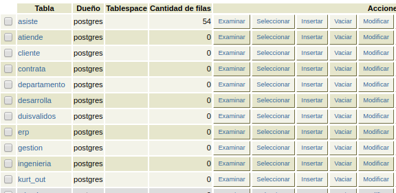

Lunes
El dia Lunes se inicio esta actividad con un video que se nos fue propuesto al final de
la clase de Programacion web, en este se detallaba como habia un ente que nos planteaba que la uca seria demolida
desde sus cimientos para que obtuvieramos el conocimiento de la forma que era debida.
Luego de eso recibimos un mensaje en el cual se nos comunicaba que el que estaba detraofesor de la uca
y que debiamos ayudar a detener sus planos, siguiendo esta explicacion se nos fue proporcionado un codigo
qr el cual tenia las instrucciones que debiamos seguir y que al resolver esta problematica, la siguiente parte de
este se desbloquearia, las instrucciones se detallaran en el articulo que se publicara el dia de mañana
Martes
El dia martes empece con la decriptacion del codigo qr que se nos proporciono, este contenia un enlace el cual luego
de accederlo contenia las instrucciones al cabo de leerlas se me hizo claro el ejercicio que consistia en validar el ingreso de los duis
por medio de una funcion
Para la realizacion de esto me debia conectar a una base de datos previamente preparada con una base de datos y un usuario con mi
numero de carnet una vez conseguido esto empece con la realizacion de la funcion el cual era bastante simple, bastaba con realizar la funcion
que recibiera como parametro el dui y lo validara por medio de una expresion regular y un numero final que validaba el dui con una formula
que se nos fue proporcionada, luego el mensaje proporcionado nos mencionaba que debiamos ir a la cancha del polideportivo que ahi encontrariamos
el siguiente codigo

Miercoles
EL dia miercoles se tuvo que ir al edificio de en la parte baja donde se estaba llevando a cabo una actividad en la tarde donde
hablamos con renacho melgar y nos proporciono la siguiente informacion, el cual contenia un audio ademas de las instrucciones
de siempre
Las instrucciones se leian asi: Existe un potencial problema de incoherencia entre la clasificación de miembro en sus subclases y el atributo denominacion_departamento... por ejemplo, sería incorrecto que un miembro de la subclase ingenieria tuviera en el atributo mencionado en la superclase "ventas". En tal sentido hay que desarrollar una función (y un trigger que la ejecute) que haga lo siguiente:
1) Cuando se inserte en la tabla miembro debe comprobarse la coincidencia del departamento expresado en el atributo con la existencia de este miembro en la subclase correcta. Si no está, se debe rechazar la inserción.
Al terminarlo nos preparamos para el dia siguiente donde algo inesperado pasaria
Jueves
El dia Jueves todos los alumnos se reunieron en las afueras del edficio b de aulas donde al cabo de un tiempo un dron empezo a descender
, ese dron a su ve traia el siguiente codigo para ese dia, al mismo tiempo no estabamos acercando mas y mas a la verdad de todo lo que estaba psando
y el porque.
Luego de finalizar el problema que se habia presentado el cual se definia como la validacion de una superclase disjunta, es decir que se borrara
lo que debia y que no se pudiera insertar sin el codigo indicado, al finalizar el mensaje decia que debiamos reunirnos en el aula magna el
dia viernes a las 5 de la tarde

Viernes
Despues de estar realizando los problemas que se nos habian propuesto toda la semana, que tambien eran parte de un laboratorio de
la materia finalmente estabamos en la magna v, donde se nos revelo la identidad de ale rev y se nos hizo la ultima peticion de poner
la denuncia en la fiscalia.
La revelacion fue un poco inesperada, ya que nunca pense que hubiera sido Erick Varela nuestro antiguo profesor de bases de datos
el que estaba detras de todo esto.